Сделка передаётся в случае, если клиент ознакомлен и заинтересован в формате и условиях работы платформы, имеет наличие прогнозируемой потребности и готов вести дальнейший диалог по началу сотрудничества. Должна быть известна подробная информация:
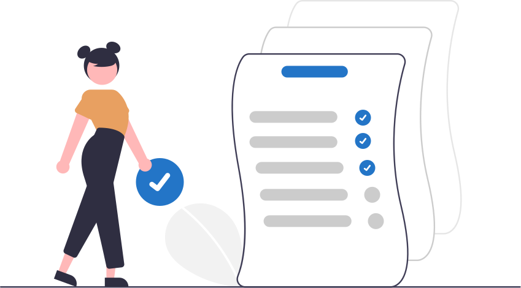
Сделка также может быть передана, с частичной информацией (если клиент в процессе диалога не может определить точные виды работ, или сроки начала работ, или возможное количество людей) в случае: если клиент заранее предлагает заключение договора или инициирует проведение зум встречи
Если клиенту нужен специализированный персонал, то он должен быть проинформирован о возможных рисках и вероятном отсутствии требуемых исполнителей. Если клиент также заинтересован в поиске, то требуются уточнить возможность подбора дополнительными вопросами, которые находятся в файле: Наши возможности по спецам - подсказка
При успешном прохождении вопросов, необходимо презентовать про возможность формирования тестовой заявки, для проверки наличия требуемых исполнителей. Согласовать следующий диалог клиента с Менеджером, с упоминанием, что возможность формирования тестовой заявки будет им проверена. Не предлагаем тестовую - ради тестовой!
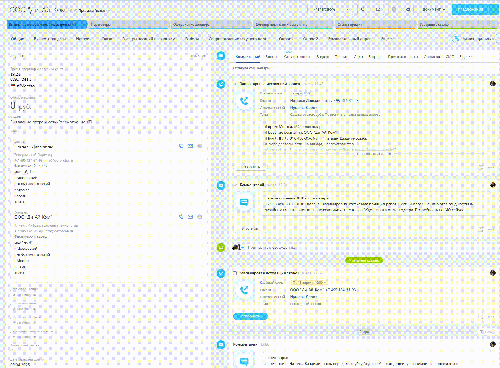
После передачи сделки Лидорубом, Менеджер получает автоматическое уведомление в личных сообщениях Битрикс 24.
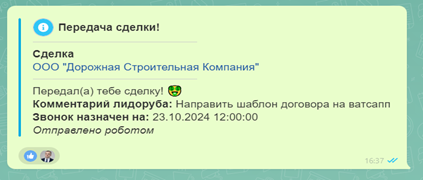
Далее Менеджер выполняет необходимые действия, указанные Лидорубом, это может быть: Отправка КП, договора, шаблона тестовой заявки или запрос реквизитов клиента. В крайних случаях это может быть подготовка договора, если клиент уже направил реквизиты или срочный звонок клиенту. Далее Менеджер связывается и знакомится с клиентом в назначенное время.
Менеджер изначально знакомиться с информацией по переданной сделке в шаблоне-передачи и комментарии лидоруба, далее выполняет срочные действия переданные лидорубом и связывается с клиентом в назначенные сроки.
Менеджер при ведении работы с клиентом фиксирует всю информацию по общению через касание звонка. Особенно необходимо фиксировать информацию о проведенных зум-встречах.
При закрытии сделки Лидоруба, требуется подробно указывать причину в комментарии к закрытию сделки или в последнем касании. Также требуется подробно указывать причину при возврате сделки в комментариях бизнес-процесса “Возврат сделки”(см.4 Возврат клиента в работу Лидорубам).
Менеджер при обнаружении ошибки со стороны Лидоруба, использует бизнес-процесс “Возврат сделки” с выбором причины возврата - Ошибочная передача лидоруба.По окончанию процесса, сделка будет автоматически возвращена Лидорубу с проставлением звонка. Также будет сформирована задача со следующими участниками и описанием:
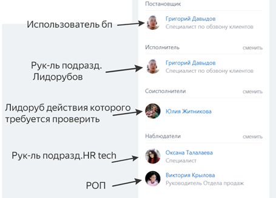
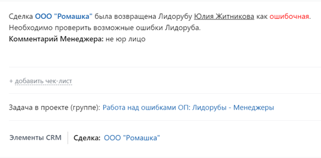
Крайний срок по задаче ставиться ровно на сутки, с возможностью его пролонгирования со стороны руководителя Григория Давыдова. Задача дублируется в отдельный проект “Работа над ошибками ОП”, для быстрого доступа к задачам, перепроверок и ведения динамики
Ошибками Лидорубов считаются:
Лидоруб еженедельно в пятницу с 17:00 до 18:00 проверяет свою “воронку” переданных сделок. Особое внимание уделяет сделкам, которые длительно находятся на одном этапе.
В основе мониторинга идет использование фильтров в Битрикс 24.
<>Образцовый фильтр для мониторинга:
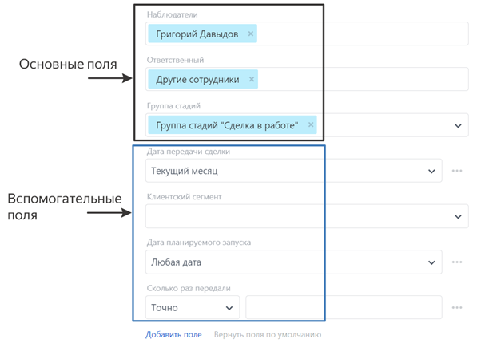
Также в мониторинге используются реестры: переданных, возвращенных и закрытых сделок Лидорубов.
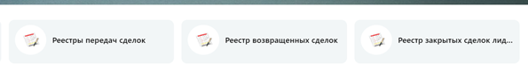
Лидоруб при обнаружении ошибки со стороны Менеджера, использует бизнес-процесс “Возврат сделки” с выбором причины возврата - Некорректная работа Менеджера. По окончанию процесса, будет сформирована задача со следующими участниками и описанием
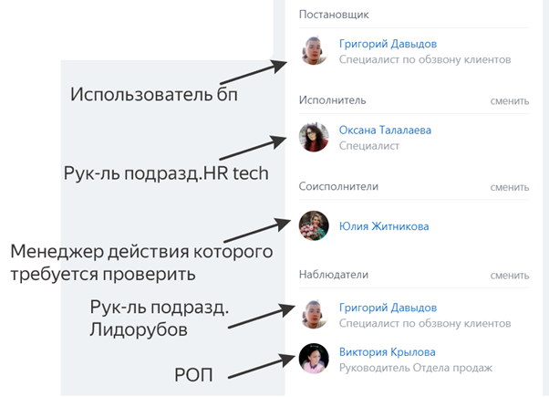
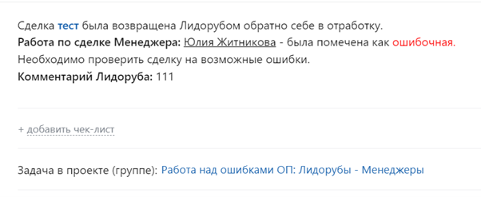
Крайний срок по задаче ставиться ровно на сутки, с возможностью его пролонгирования со стороны руководителя Оксаны Талалаевой. Задача дублируется в отдельный проект “Работа над ошибками ОП”, для быстрого доступа к задачам, перепроверок и ведения динамики.
Ошибками Менеджеров считаются:
В случае подтвержденной ошибки, клиент будет возвращен в работу другому менеджеру. При передаче ставить РОПа в известность.
Сделка может быть возвращена Менеджером обратно Лидорубу в случаях:
Менеджер использует бизнес-процесс “Возврат сделки”с установлением даты следующего звонка для Лидоруба, подробным комментарием ситуации и выбором подходящей причины возврата в списке.
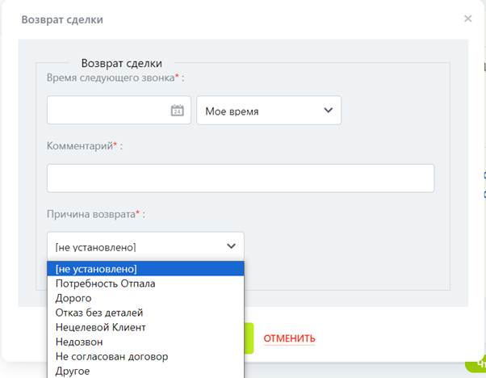
После возврата сделки Менеджером, Лидоруб получает автоматическое уведомление в личных сообщениях Битрикс 24. Далее Лидоруб связывается с клиентом в назначенное время для его повторной отработки.
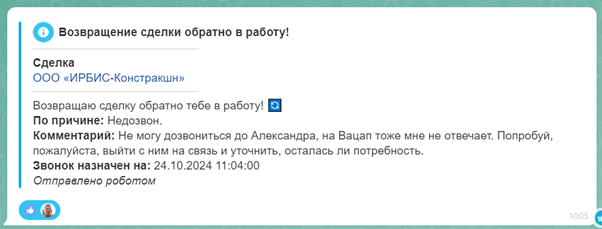
Если в процессе мониторинга своих переданных сделок, Лидоруб обнаруживает слабую активность клиента, то он может попросить Менеджера вернуть сделку обратно себе в работу через бизнес-процесс “Возврат сделки” или проинформировать что свяжется с клиентом без использования бизнес-процесса.
Менеджеры также могут передавать в работу лидорубам своих клиентов, в случае нехватки времени для их отработки или слабой активности клиента. Передача происходит через бизнес-процесс “Передача сделки”. Поле выбор менеджера - не заполняется. Обязательное значение: Передача Менеджер → Лидоруб - Да.
Клиент в случае передачи, возвращается обратно Менеджеру, без необходимого согласования РОПа Виктории Крыловой. Остальные этапы передачи остаются без изменений.
Лидорубы на регулярной основе занимаются прозвоном проигрышных сделок, закрытых не позже чем за 3 месяца, от текущего месяца. (прим. в октябре отрабатывается июль, в ноябре - август и т.д). Могут быть возвращены сделки закрытые по стадиям: “Потребность отпала”, “Дорого”, “Отказ клиента без деталей”, “Недозвон”, “Не согласован договор”, “Другое”. В обязательном порядке, перед отработкой проверяется информация о ранее проведенных тестовых заявках, для принятия решения о возврате в работу. Распределением сделок занимается рук-ль подразделения Лидорубов Григорий.Д
В случае обнаружения ошибки со стороны Менеджера, при закрытии клиента или при ведении с ним переговоров, сделка проверяется на ошибки через бизнес-процесс: “Возврат сделки”- Некорректная работа Менеджера.